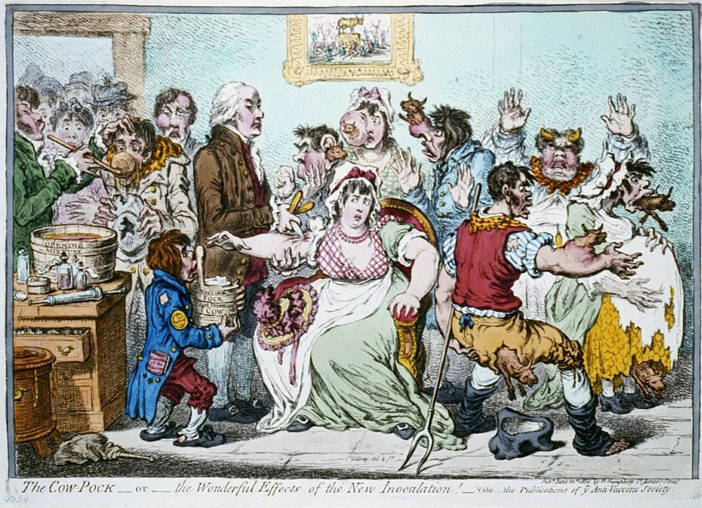

toute la paroisse · 1807–1885 · histoire inédite tirée des registres
Variole et vaccination
La variole revenait tous les dix ou quinze ans et tuait surtout les jeunes enfants. À partir des années 1830, les registres montrent aussi l’autre face de cette histoire : la vaccination.
Texte traduit de l’original polonais avec l’aide de Claude. Je cite les registres dans leur langue d’origine, avec une traduction.
La variole revenait dans nos villages tous les dix ou quinze ans. Le prêtre inscrivait en regard du nom des défunts « variolae » ou « in variolis », de la variole. C’étaient surtout de petits enfants qui en mouraient.
- 180765 morts, tous âgés de moins de 13 ans, dont 43 de moins de 5 ans. Le plus grand nombre à Dobra, Porąbka et Wilczyce.
- 1810–181138 morts, uniquement des enfants. En 1810, le plus grand nombre à Półrzeczki, où 16 moururent.
- 184720 morts, au cours de l’année de la faim.
- 186013 morts, presque uniquement des enfants, à Półrzeczki, Chyszówki, Wilczyce, Zadziele et Łostówka.
- 186712 morts, presque tous de moins de 5 ans.
- 187348 morts, dont 37 de moins de 5 ans. Le plus grand nombre à Wilczyce et à Dobra. L’histoire « L’année 1873 à Zadziele » raconte cette année-là.
- 188541 morts. Près des deux tiers étaient de petits enfants, mais sept avaient entre 15 et 21 ans.
Ces chiffres couvrent les registres des décès des neuf villages de la paroisse, état en novembre 2026. Je n’ai compté les copies annuelles des registres que pour les années où les registres principaux manquent.
Vaccinés et non vaccinés
La vaccination contre la variole au moyen de la vaccine (la variole de la vache) fut mise au point à la fin du XVIIIe siècle par le médecin anglais Edward Jenner. Dans nos registres, la première trace de vaccination apparaît dans les années 1830, et d’emblée sous ses deux faces. En 1837, à Jurków, dans l’acte de Franciszka Kołodziej, âgée d’un an, le prêtre nota : « in variolis non vaccin. », de la variole, non vaccinée. Et quatre ans plus tard mourait à Dobra Urban Miśkowiec, onze ans, alors qu’il avait déjà été vacciné.
Extrait du registre des décès de Dobra, 14 août 1841
Urbanus Andreae et Hedvigis Miskowiec fil. · 11 an. · in variolis, jam vaccinatus
Urban, fils d’Andrzej et de Jadwiga Miśkowiec, 11 ans. Mort de la variole, alors qu’il était déjà vacciné.
Dobra, décès 1786–1846 · cote 4268/5505 · scan 069 · voir le scan ↗

« Impfung pro 842 »
Les registres des baptêmes servirent aussi à la vaccination. En 1842, dans les registres de Dobra, de Jurków et de Chyszówki, une main étrangère ajouta en allemand, en écriture gothique cursive (Kurrent), sur toute la largeur de la page, sous les actes : « Impfung pro 842 », vaccination pour l’année 1842, et apposa une signature. De telles notes reviennent les années suivantes : en 1845, 1847, 1850 et 1853 à Dobra, en 1857 avec la date « Dobra am 28. November 857 », et en 1862 en latin : « ad hoc vaccin. pro 862 », vaccinés jusqu’ici pour l’année 1862. En 1865, à Chyszówki, quelqu’un ajouta en polonais : « Dr Trembecki szczepił » (le Dr Trembecki a vacciné).
La note indiquait très probablement jusqu’à quel enfant du registre allait la liste des enfants à vacciner cette année-là.
À Chyszówki, en 1842, la note fut placée sous le baptême de Maciej, de la maison n° 19, fils de Walenty et de Maria, né le 22 janvier. En avril, le prêtre l’inscrivit dans le registre des décès.
Extrait du registre des décès de Chyszówki, 11 avril 1842
Mathias Valentiniani et Mariannae Sorysz filius · 2 Mens. · in variolis non vaccinatis
Maciej, fils de Walenty et de Marianna Sorysz, deux mois. Mort de la variole, non vacciné.
Chyszówki, décès 1786–1852 · cote 4269/5500 · scan 039 · voir le scan ↗
La vaccination n’en finit pas d’un coup avec la variole. En 1873, celle-ci tua encore 48 personnes, et en 1885, 41, dont plusieurs adolescents et jeunes adultes. À Dobra, dans la maison n° 199, deux sœurs, de dix-huit et de dix ans, moururent alors en l’espace de trois semaines. Après 1886, les décès dus à la variole ne sont plus que des cas isolés dans les registres.
Degré de certitude
- CertainLes mentions « non vaccinatis » et « jam vaccinatus », les notes sur la vaccination sous les baptêmes. Lectures comparées aux scans.
- ProbableQue le garçon mort le 11 avril 1842 soit le Maciej baptisé le 26 janvier : même maison n° 19, père Walenty et âge de deux mois. De même, le sens des notes « Impfung pro… ».
- À vérifierLes nombres de morts, état en novembre 2026, ont été calculés automatiquement à partir des transcriptions et peuvent être un peu sous-estimés, car le prêtre n’indiquait pas toujours la cause. Le nom du médecin de 1865 et les signatures sous les notes ont été lus avec incertitude.
Ce que nous ne savons pas
- Combien d’enfants on vaccinait et qui vaccinait dans les premières années. Les listes de vaccination n’ont pas été conservées dans les registres.
- Si, en 1807–1811, quelqu’un dans les villages était déjà vacciné.
Sources
- Registres des décès : Dobra, cote 4268/5505 (scan 069) ; Jurków, cote 4268/5520 (scan 037) ; Chyszówki, cote 4269/5500 (scan 039) ; ainsi que les registres des décès de Dobra, Jurków, Chyszówki et Półrzeczki des années 1800–1890.
- Registres des baptêmes portant des notes sur la vaccination : Chyszówki, cote 4269/3505 (scan 024) et 4269/3510 (scan 028) ; Jurków, cote 4268/3570 (scans 005, 028) ; Dobra, cote 4268/3540 (scans 007, 016, 021, 027, 033, 040, 050) ; sur le site Metryki de la Société généalogique polonaise (PTG).